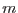
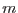

Image extraction is enabled by setting the
name of the output file using the parameter imageset. The name
of the columns to use for the  and
and  axes of the image are set using the
parameters xcolumn and ycolumn. The range of the columns used
for image extraction is determined using the same algorithm as for the energy
column in spectral extraction, and is controlled and determined independently
for the
axes of the image are set using the
parameters xcolumn and ycolumn. The range of the columns used
for image extraction is determined using the same algorithm as for the energy
column in spectral extraction, and is controlled and determined independently
for the  and
and  columns. The parameters used for the
columns. The parameters used for the  column are
ximagemin and ximagemax, with similarly
named parameters for the
column are
ximagemin and ximagemax, with similarly
named parameters for the  column.
column.
There are two options available for binning of images. By default, the binning factor for the
image is set such that the image will be of a certain size. The size of the image
is controlled by the parameters ximagesize and yimagesize, and
is set to by default. Note that non-integral binning of integer-valued
columns is not allowed. Thus when extracting an image from integer-valued
columns using ximagesize and yimagesize, the image binning factor
will be rounded up to the nearest integer number, so that the actual extracted
image may be smaller than what was requested. It is also possible under these
circumstances that the  and
and  bin sizes could be set to different values, even
though a square image was requested. In this case a square image can be produced
by setting the parameter squarepixels to true. Then the
bin sizes could be set to different values, even
though a square image was requested. In this case a square image can be produced
by setting the parameter squarepixels to true. Then the  and
and  bin sizes will both be set to whatever is the larger of the two values.
bin sizes will both be set to whatever is the larger of the two values.
Alternatively, one can control the binning factor directly by setting the parameters ximagebinsize and yimagebinsize.
By default, an image is accumulated simply as counts of the number of rows (events) falling within each pixel. However, if the parameter zcolumn is set, then the image is accumulated by summing up the values of the specified column for rows that fall within each pixel.
By default, evselect tries to determine the best data type for the image created, under the assumption that the smallest data type possible should be used. If zcolumn is not set, an integer-valued image will be created. If zcolumn is set, a real-valued image will be created. The default type of image can be over-ridden by setting the parameter imagedatatype.
Any World Coordinate System (WCS) information available for the columns used in image extraction will be propagated to the output image. If no WCS information is available for a column, then the CTYPE keyword for this axis of the image is set to the name of the column, and the other WCS keywords are set to reflect the range and binning of this column, as is done for SPEC* keywords in spectral extraction. If the image extraction columns do have WCS information, then one can request evselect to shift the image so that it is centered on a particular point in the sky. This is activated by setting the coordinate center using the parameters raimagecenter and decimagecenter. Coordinates must be given in decimal degrees.
As well as the standard WCS keywords described above, evselect
also writes keywords to the image describing the ``physical''
coordinate system, ie the native coordinate system of the columns used
for extracting the image. In order to maintain backward
compatibility, there are currently two sets of redundant keywords
written for this purpose. The first set uses the LTMn_m and
LTVn keywords to specify the transformation, where  and  can
take on the values of 1 or 2. The transformation from the physical
to the image
coordinates is
and  can
take on the values of 1 or 2. The transformation from the physical
to the image
coordinates is
The second method uses the multiple WCS conventions to specify the physical coordinate system for the image. In this scheme a second set of WCS keywords is written, except each of the standard keywords has a letter appended to it, which we have chosen to be ``L''. In addition we specify the following keywords to identify this coordinate system:
WCSNAMEL = 'PHYSICAL' WCSAXESL = 2